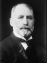
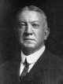
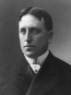

Party: Democrat
Bio: Advocating for efficient government, honest reform, and transportation development.

Party: Republican
Bio: Advocating for honest reform, businesslike administration, and opposition to Tammany Hall influence.

Party: Municipal Ownership League
Bio: Advocating for anti-corruption reforms, public ownership of utilities, and greater government accountability.